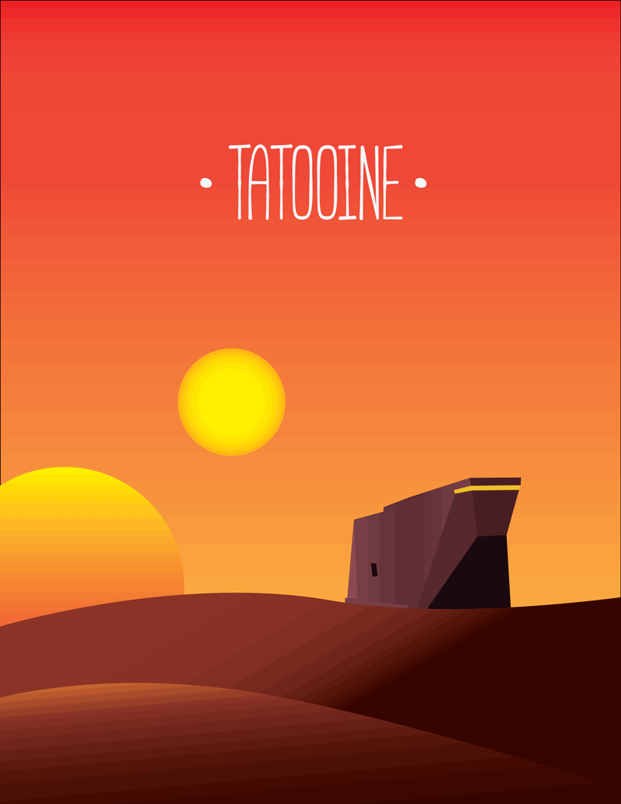
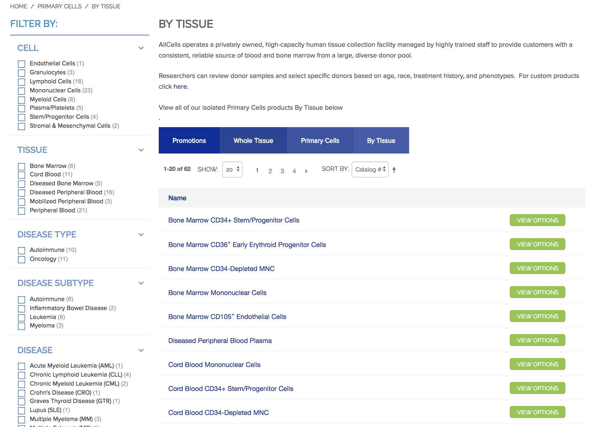
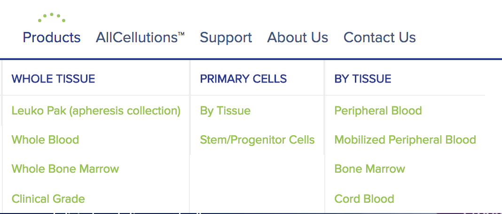
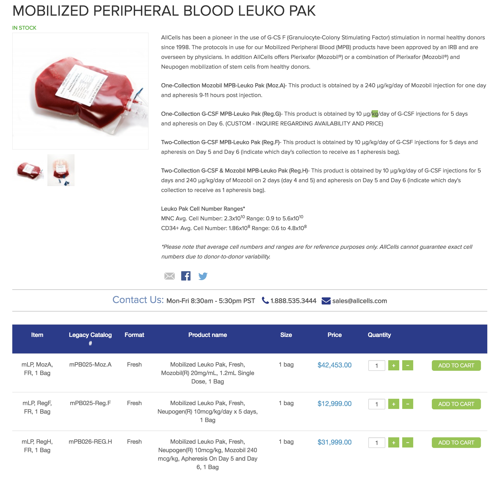

AllCells Store
Allcells is one of the west coast's largest suppliers of biological lab material.
As my first project with the Trellis team, I was tasked with designing a commerce workflow around Allcell's existing website. The limitations inherent in this task meant that I needed to re-architect the navigation in a way that made sense as both a corporate landing site and a usable ecommerce web application. This project lasted 2 months and I was the sole designer working with a team of 4 engineers.
 This project was defined by complex product categorizationsNavigation
One of the most complex challenges for this platform was mapping the criteria for filtering products. The userbase of this site was entirely composed of medical researchers and large biotech firms, so we knew that there was a level of technical knowledge implied in our user personas. With that in mind, we still wanted to keep the interface simple, while providing the much needed information relevant to researchers and scientists using these materials to save lives. A bulk order of the wrong material could spell doom for entire research wings if some piece of information was left out.
Surfacing incorrect product data could mean hundreds of thousands of dollars in lost funding for researchers.
 A robust filtering system meant researchers and scientists could quickly drill down into the exact product they were seeking, as complex as they can beI decided to approach the problem by drilling down into categories from a high level, working closely with the team, we split products into sensical criteria based on how products were shopped for by researchers. We were also given examples of similar sites by the client to based some of our assumptions off of, giving us a starting point to work off of.
 The megamenu is the main entry point to users who were not using the search bar, this allowed for a quick overview of the product selection that made sense considering the complexity of categories.The client specifically requested content over aesthetic, but we still did our best to work with the large blocks of text that comprised certain products.
 Screenshot of actual product page